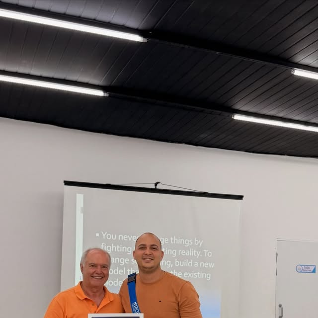

Nossa Clínica
Dedicados a tratar patologias osteomusculares e neuromusculares através de técnicas modernas e consagradas como a Osteopatia Clínica, o Método Mulligan Internacional, Reabilitação Articular e Liberação Miofascial.
Oferecemos o internacionalmente certificado Conceito Mulligan de Terapia Manual, que devolve o alinhamento das vértebras, articulações e ligamentos através de mobilizações ativas completamente indolores. Os resultados de alívio e ganho de amplitude de movimento são percebidos já na primeira consulta.
Em pós-operatórios (como joelho e ligamento cruzado anterior) e lesões esportivas, os protocolos são realizados em estreita sintonia com o diagnóstico cinético-funcional para que o paciente retorne rapidamente e com total segurança à sua rotina ativa.
Na área de Osteopatia Pediátrica, oferecemos um ambiente calmo e toques ultradelicados para recém-nascidos e bebês com cólicas intensas, refluxo gastroesofágico, torcicolo congênito e assimetrias cranianas (plagiocefalia), promovendo sono tranquilo e qualidade de vida para toda a família.


